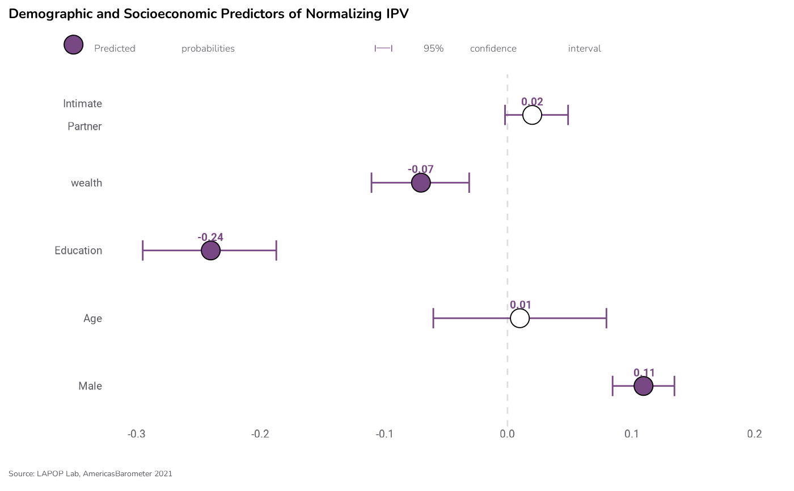

LAPOP Regression Graphs
lapop_coef.RdThis function creates plots of regression coefficients and predicted probabilities using LAPOP formatting.
Usage
lapop_coef(
data,
coef_var = data$coef,
label_var = data$proplabel,
varlabel_var = data$varlabel,
lb = data$lb,
ub = data$ub,
pval_var = data$pvalue,
lang = "en",
main_title = "",
subtitle = "",
source_info = "",
ymin = NULL,
ymax = NULL,
pred_prob = FALSE,
color_scheme = "#784885",
subtitle_h_just = 0
)Arguments
- data
Data Frame. Dataset to be used for analysis. The data frame should have columns titled coef (regression coefficients/predicted probabilities; numeric), proplabel (text of outcome variable; character), varlabel (names of variables to be plotted; character), lb (lower bound of coefficient estimate; numeric), ub (upper bound of estimate; numeric), and pvalue (p value of coefficient estimate; numeric). Default: None (must be supplied).
- coef_var, label_var, varlabel_var, lb, ub, pval_var
Numeric, character, character, numeric, numeric, numeric. Each component of the data to be plotted can be manually specified in case the default columns in the data frame should not be used (if, for example, the values for a given variable were altered and stored in a new column).
- lang
Character. Changes default subtitle text and source info to either Spanish or English. Will not translate input text, such as main title or variable labels. Takes either "en" (English) or "es" (Spanish). Default: "en".
- main_title
Character. Title of graph. Default: None.
- subtitle
Character. Describes the values/data shown in the graph, e.g., "Regression coefficients". Default: None.
- source_info
Character. Information on dataset used (country, years, version, etc.), which is added to the end of "Source: " in the bottom-left corner of the graph. Default: None (only "Source: " will be printed).
- ymin, ymax
Numeric. Minimum and maximum values for y-axis. Default: dynamic.
- pred_prob
Logical. Is the graph showing predicted probabilities (instead of regression coefficients)? Will only change text in the legend, not the data. Default: FALSE.
- color_scheme
Character. Color of bars. Takes hex number, beginning with "#". Default: "#784885" (purple).
- subtitle_h_just
Numeric. Move the subtitle/legend text left (negative numbers) or right (positive numbers). Ranges from -100 to 100. Default: 0.
Value
Returns an object of class ggplot, a ggplot figure showing
coefficients or predicted probabilities from a multivariate regression.
Author
Luke Plutowski, luke.plutowski@vanderbilt.edu
Examples
# \donttest{
require(lapop); lapop_fonts()
#> LAPOP fonts loaded successfully: Inter, Roboto, and Nunito (regular and light).
df <- data.frame(
varlabel = c("Intimate\nPartner", "wealth", "Education", "Age", "Male"),
coef = c(0.02, -0.07, -0.24, 0.01, 0.11),
lb = c(-0.002, -0.110, -0.295, -0.060, 0.085),
ub = c(0.049, -0.031, -0.187, 0.080, 0.135),
pvalue = c(0.075, 0.000, 0.000, 0.784, 0.000),
proplabel = c("0.02", "-0.07", "-0.24", "0.01", "0.11")
)
lapop_coef(df,
main_title = "Demographic and Socioeconomic Predictors of Normalizing IPV",
pred_prob = TRUE,
source_info = ", AmericasBarometer 2021",
ymin = -0.3,
ymax = 0.2)

# }